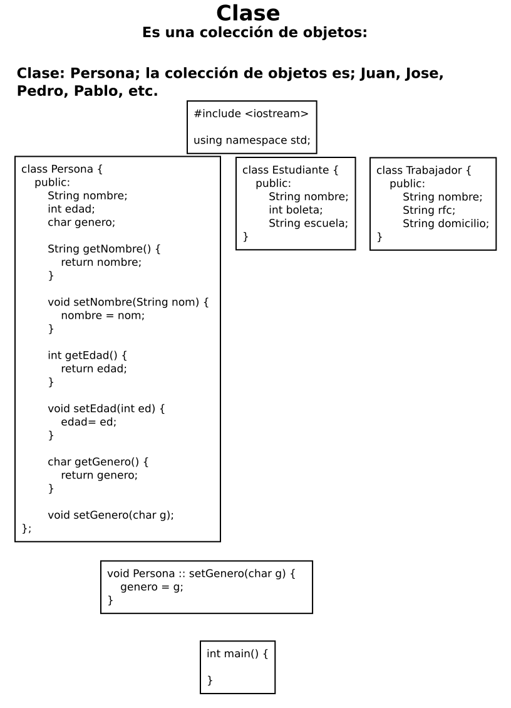

TEMARIO POO
Clases: Persona, Estudiante, Trabajador, Ciudadano. Animal, Aves, Mamiferos, Reptiles. Vegetal, Cebolla, Sandia, Trigo. FigurasGeometricas, Circulo; triangulo, Poligono.

Block de notas, archivo java: ParadigmasProgramacion2020/Programas/Cuadrado.java
Block de notas, archivo java: ParadigmasProgramacion2020/Programas/MetodosMat.java
Block de notas, archivo java: ParadigmasProgramacion2020/Programas/Caracteres.java
Partes de una lista.
[Primer elemento de la lista | El resto de lista]
[Cabeza | Cola]
La lista en Prolog.
Encadenamiento de funciones: Programa en C++.
Block de notas, archivo py: ParadigmasProgramacion2020/Programas/EncadeF.py
Encadenamiento de funciones: Programa en Python.
Block de notas, archivo py: ParadigmasProgramacion2020/Programas/FCTemperatura.py
Una función entrega un valor:
Block de notas, archivo cpp: ParadigmasProgramacion2020/Programas/FCalculoPolar.cpp
Calcular la hipotenusa.
Calcular la raíz cuadrada de un número.
Una función que entrega un mensaje:
Block de notas, archivo cpp: ParadigmasProgramacion2020/Programas/FMCPolares.cpp
Block de notas, archivo cpp: ParadigmasProgramacion2020/Programas/FCamNum.cpp
Una función entrega un valor y recibe por teclado valores:
Block de notas, archivo cpp: ParadigmasProgramacion2020/Programas/FPremio.cpp
Una serie de funciones:
Block de notas, archivo cpp: ParadigmasProgramacion2020/Programas/FCompletaCpolar.cpp
Procedimientos:
Block de notas, archivo cpp: ParadigmasProgramacion2020/Programas/FProcedimiento1.cpp
Paradigma imperativo; programación estructurada: Dónde se recurre a subrutinas y a tres estructuras de control básicas. Subrutinas que se ejecutan en secuencia, selección (if), iteración (whilw,for), recursión es, una función que se llama así misma
Programa 3: Presentar un programa que, .
Solución:
Pizarrón, archivo dia: ParadigmasProgramacion2020/PpEjemplo3.dia

Programa 1: Presentar un programa que, calcule el volumen de un cilindro: dónde r es su radio del cilindro y L su longitud. Utiliza la siguiente fórmula: V = Pi r2 L.
Programa 2: Presentar un programa que, que calcule la superficie de un cilindro: dónde r es el radio del cilindro y l es la longitud del cilindro. Utiliza la fórmula : 2 Pi r l + 2 Pi r2.
Programa 3: Presentar un programa que, calcule las raices de x del siguiente polinomio; ax2 + bx + c, donde a, b, c son números conocidos.
Programa 4: Presentar un programa que escriba asteriscos, iguales, operador suma y guiones en consola, por cada renglón presentar 45 caracteres en cinco líneas por separado.
Programa 5: Presentar un programa que escriba su mombre en una línea adornado de asteriscos y gatos.
Programa 6: Presentar un programa que escriba su comida favorita en una línea adornada de asteriscos y gatos.
Programa 1: Crear listas: diccionario. Alimentar un arreglo para crear una lista de estudiantes con nombre, boleta y promedio.
Declarar la lista:
list <Tipo> Nombre de la lista;
list <char> L1;
Cargar la lista:
for(int x = 'a'; x <= 'z'; x++);
L1.push_back(x);
cout << endl;
while(n != 0) {
cout << "Ponga la palabra: " << endl;
cin >> pal;
cout << endl;
lista1.push_back(pal);
n = n -1;
}
Crear un iterador de la lista:
list <char> L1:: iterator i = L1.begin();
Funciones de listas:
L1.front()
L1.back()
L1.push_front()
L1.push.back()
L1.merge()
L1.sort()
L1.begin()
L1.end()
Pizarrón, archivo dia: ParadigmasProgramacion2020/PpEjemplo4.dia

public interface Comestible {
public abstract String comoComer();
}
class Pollo extends Animal implements Comestible {
public String comoComer() {
return "Pollo frito ";
}
}
abstract class Fruta implements Comestible {
}
class Manzana extends Fruta {
public String comoComer() {
return "Se hace sidra ";
}
}
class Naranja extends Fruta {
public String comoComer() {
return "Se hace jugo ";
}
}